Псевдоклассы и Псевдоэлементы
Автор: Бастун Андрей
Псевдоклассы
Псевдокласс – это селектор, который выбирает элементы в специфическом состоянии, например, если
они являются первым элементом своего типа(:first-child), или на них наведен
указатель мыши (:hover). Они действуют как обычные классы, примененные в вашем
index.html, но помогают уменьшить количество классов или отследить определенные состояния.
Синтаксис
:psevdoclass-name
Пример
Нам необходимо текст первой строки сделать более жирным и увеличить, мы можем не использовать псевдокласс и задать обычный класс первой строки. Cамое очевидное решение, которое мы можем использовать – повесить класс на первую строку и задать нужные нам стили: 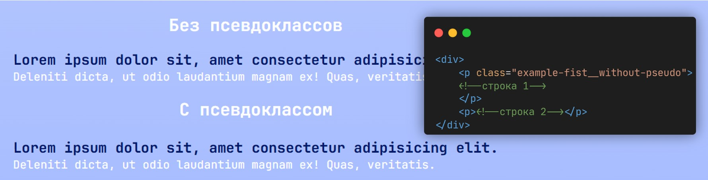
Однако, если нам надо будет добавить сверху, тогда нам нужно будет передвигать класс каждый раз
на одну строку вверх, чтобы не совершать лишних операций, мы можем использовать псевдокласс
:fist-child – он всегда будет выбирать первый дочерний элемент.
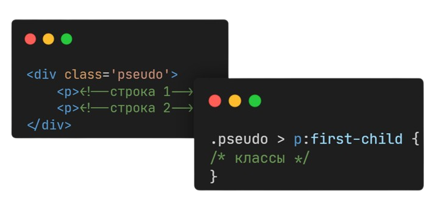
Все псевдоклассы ведут себя подобным образом. Они нацелены на какой-то фрагмент вашего документа, находящийся в определённом состоянии, и ведут себя так, как если бы вы добавили класс в свой HTML.
Псевдоклассы группы child
Также есть подобные псевдоклассы (:last-child), (:only-child),
(:nth-child), (:nth-last-child).
-
:last-childнаходит любой элемент, являющийся последним в его родителе. 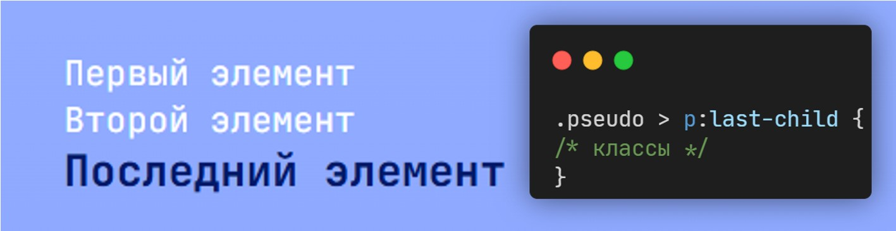 -
:only-childнаходит любой элемент, являющийся единственным потомком родителя. 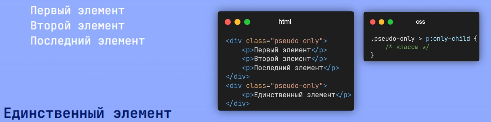 -
:nth-child(n-число)находит один или более элементов, основываясь на их позиции среди группы остальных соседних элементов. Имеет необыкновенный синтаксис, так как на вход ждет либо точное обозначение дочернего элемента (счет идет с 1), либо выражение типа An+B, где A и B – целые числа 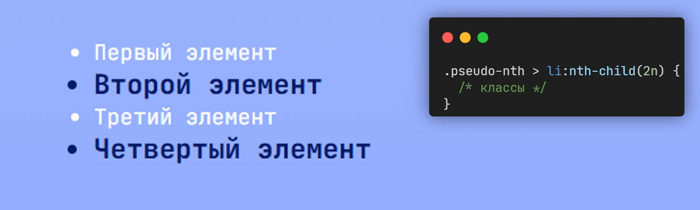 -
:nth-last-child(n-число)имеет такое же предназначение, что и предыдущий псевдокласс, но отсчет ведется с конца 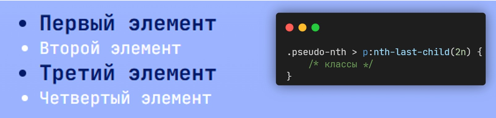
Псевдоклассы группы type
Имеют практически те же функции, однако псевдоклассы -of-type позволяют выбирать из группы элементы одного уровня вложенности на основании их порядка.
-
:first-of-type— первый 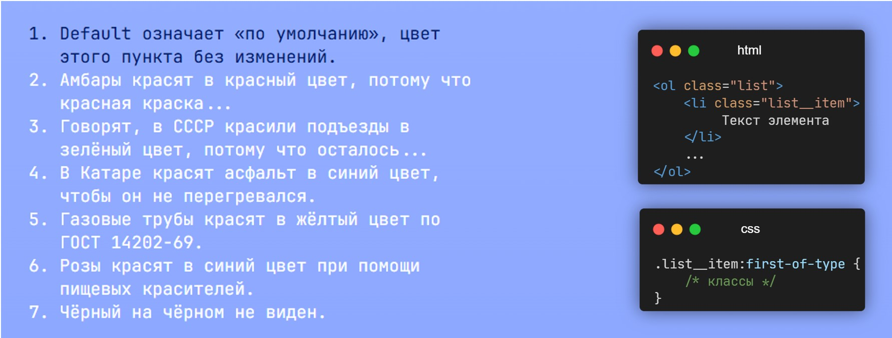 -
:last-of-type— последний 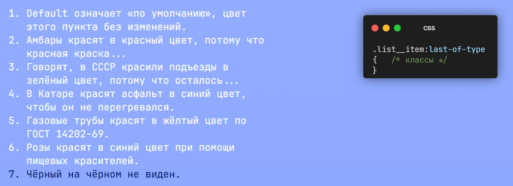 -
:only-of-type – единственный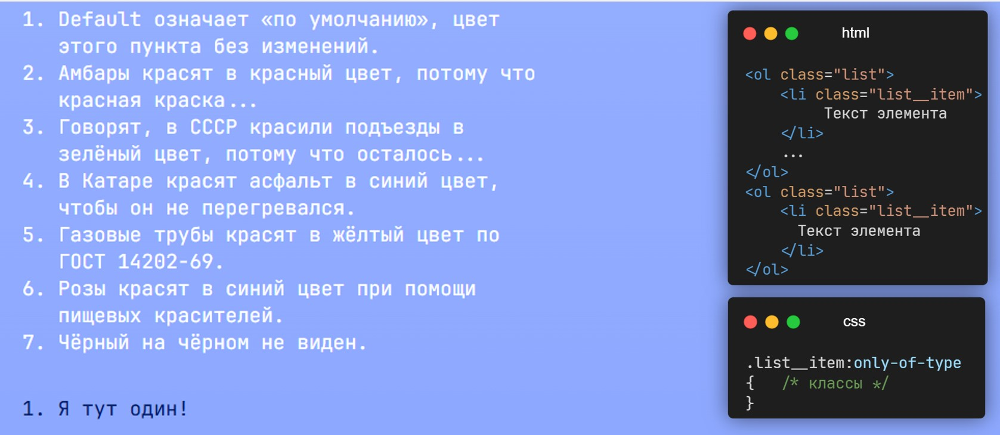 -
:nth-of-type(n-число)— каждый n-й элемент 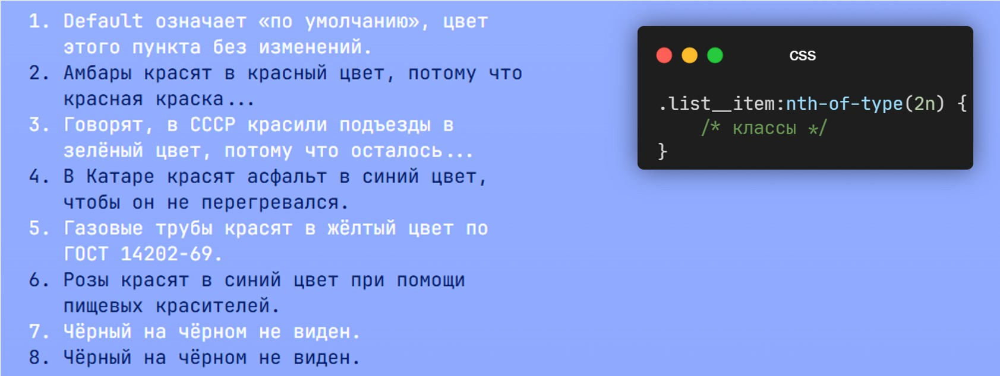 -
:nth-last-of-type(n-число)— каждый n-й элемент с отсчётом «с конца». 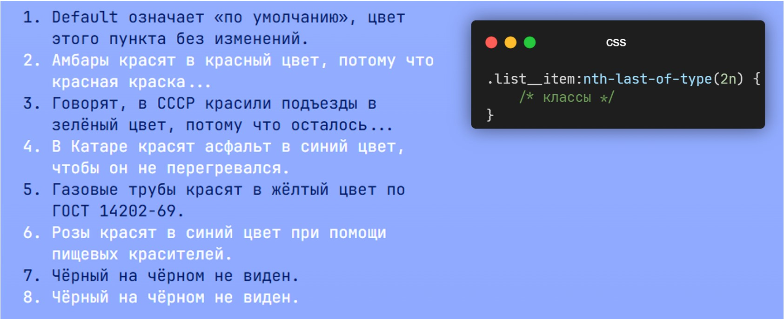
Базовые псевдоклассы
-
:rootнаходит корневой элемент дерева документа. Чаще всего используется для задания переменных переиспользуемых потом черезvar(), также могут быть заданы базовые стили сайта, для примера фон 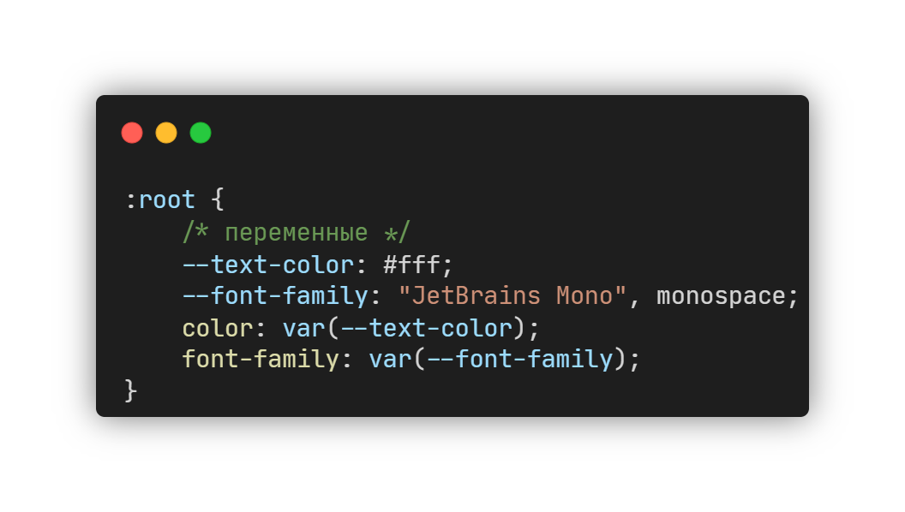 -
:linkпозволяет вам выбирать ссылки внутри элементов. Он выберет любую ссылку, которая ещё не была посещена, даже те, которые уже стилизованы 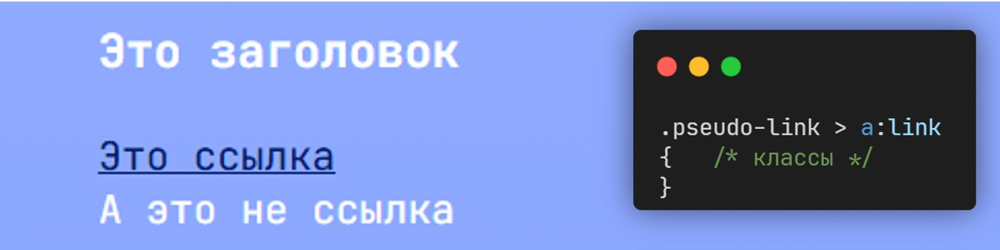 -
:visitedпозволяет вам выбирать ссылки, которые были посещены 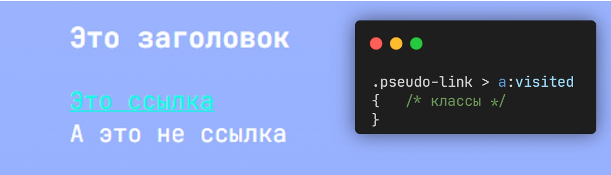 -
:hasстили указанные для элемента с этим псевдоклассом применяются только в том случае, если хотя бы один из относительных селекторов, переданных в него в качестве аргумента, соответствует хотя бы одному элементу 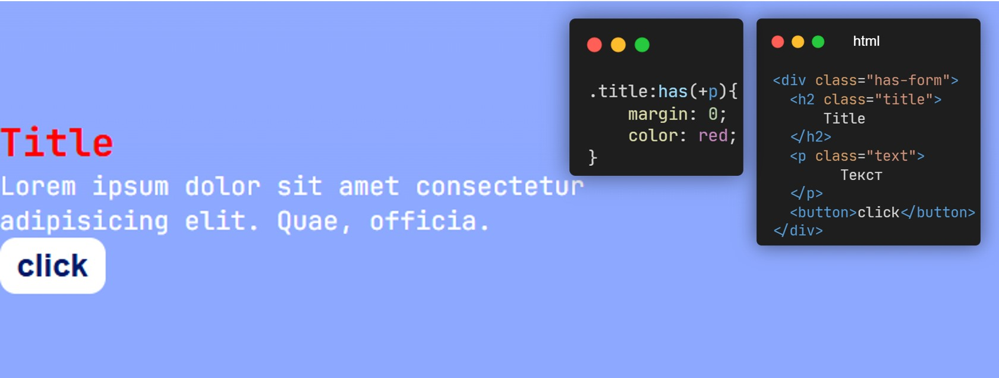
Псевдоклассы пользовательского действия
Некоторые псевдоклассы применяются только тогда, когда пользователь некоторым образом взаимодействует с документом. Эти псевдоклассы действий пользователя, иногда называемые динамическими псевдоклассами, действуют так, как если бы класс был добавлен к элементу в момент взаимодействия с ним пользователя.
-
:hover— упоминался выше; он применяется только в том случае, если пользователь наводит указатель мыши на элемент, обычно на ссылку. 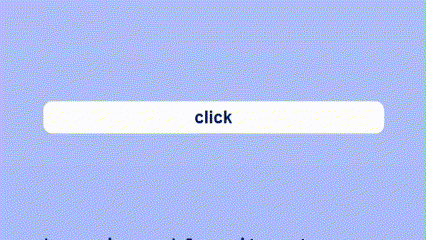 -
:focus— применяется только в том случае, если пользователь фокусируется на элементе, используя управление с клавиатуры. 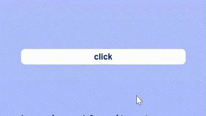 -
:active– применяется к кнопкам и применяется только в том случае, если пользователь нажимает на кнопку. 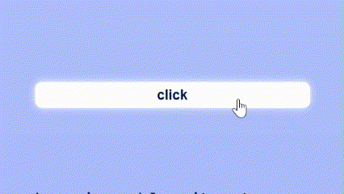
Псевдоклассы для работы с input
-
:checkedотображается только в том случае, когда input type=”checkbox” и он в активном состоянии. 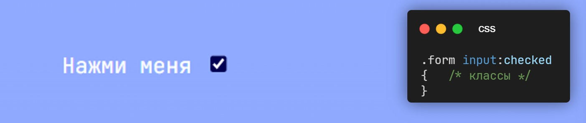 -
:disabledотображается только в том случае, когда у input есть атрибут disabled 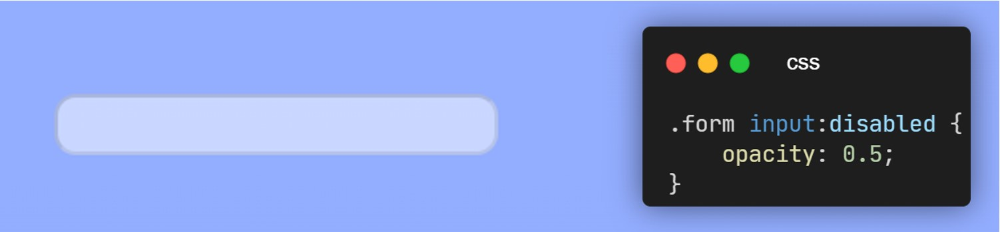 -
:enabledотображается только в том случае, когда у input нет атрибута disabled 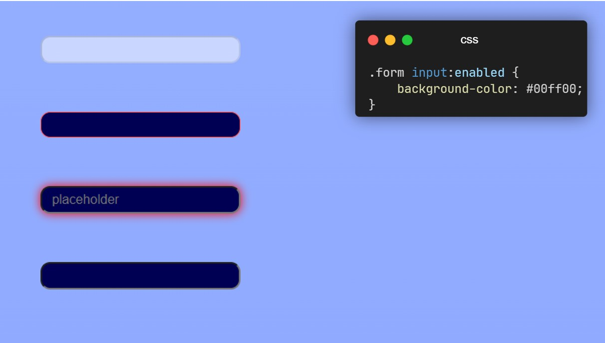 -
:requiredотображается только в том случае, когда у input есть атрибут required 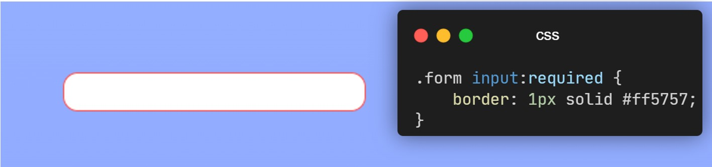 -
:placeholder-shownотображается только в том случае, когда у input есть атрибут placeholder 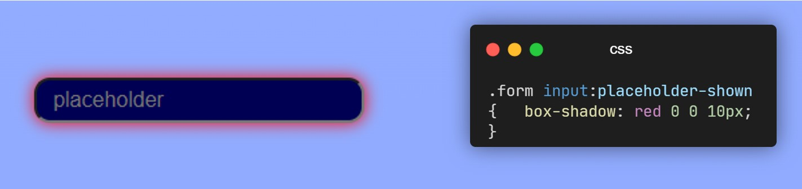
Псевдоэлементы
Псевдоэлемент очень схож с псевдоклассом, однако они действуют так, как если бы был добавлен целый новый элемент в HTML разметку, а не применен класс к существующим элементам.
Синтаксис
::pseudoelement-name
Пример
Нам необходимо выделить первую строку каждого абзаца, для этого мы можем создать новый элемент
span и ему задать класс, либо же использовать псевдоэлемент (::fist-line), который
сделает это за нас
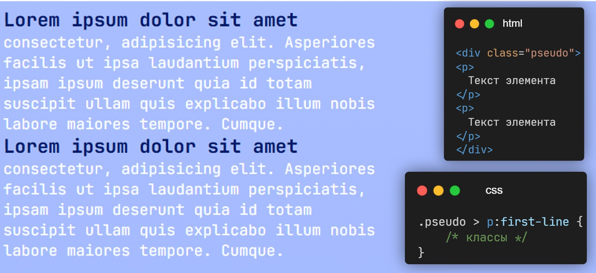
Он действует так, как если бы <span> волшебным образом был обёрнут вокруг этой
первой отформатированной строки и обновлялся бы каждый раз при изменении длины строки.
Вы можете видеть, что селектор выбирает первую строку обоих абзацев.
Другие примеры псевдоэлемнтов
::placeholderпредставляет из себя атрибут placeholder и позволяет его стилизовать 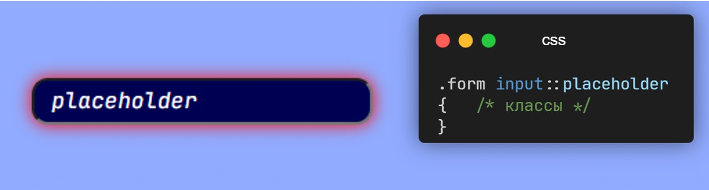::markerприменяет стили к маркеру списка, которые обычно содержат значок или номер.Недоступен в Safari!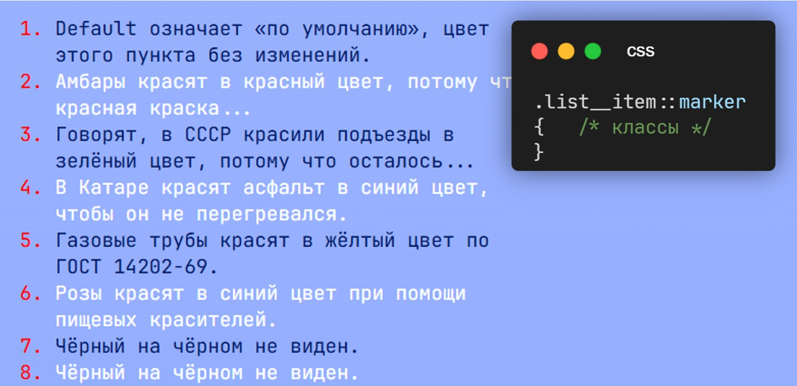::selectionпозволяет стилизовать выделение текста на странице или в какой-то определенной части документа 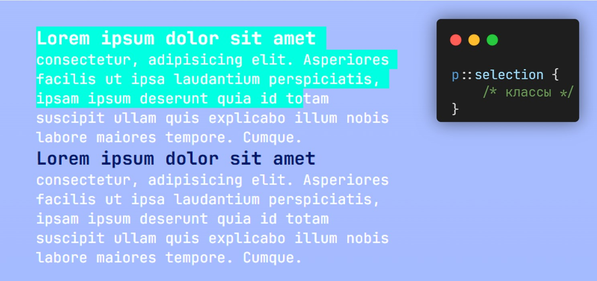
Объединение псевдоклассов и псевдоэлементов
Если вы хотите сделать шрифт первой строки первого абзаца жирным, вы можете связать вместе
селекторы :first-child и ::first-line.
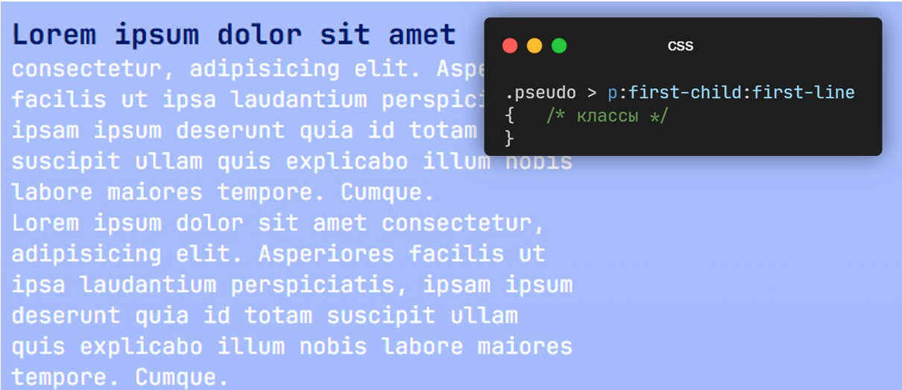
Мы говорим, что хотим выбрать первую строку первого элемента
, который находится внутри элемента с классом pseudo. Вы можете проводить такие манипуляции с большинством псевдоклассов и псевдоэлементов.
Псевдоэлементы Шредингера
Существуют два специальных псевдоэлемента ::before и ::after, которые
позволяют добавлять контент на нашу страницу, которого на самом деле не существует в HTML.
Используются они либо для прямого своего назначения – а именно генерации различного контента на
странице в виде текста.
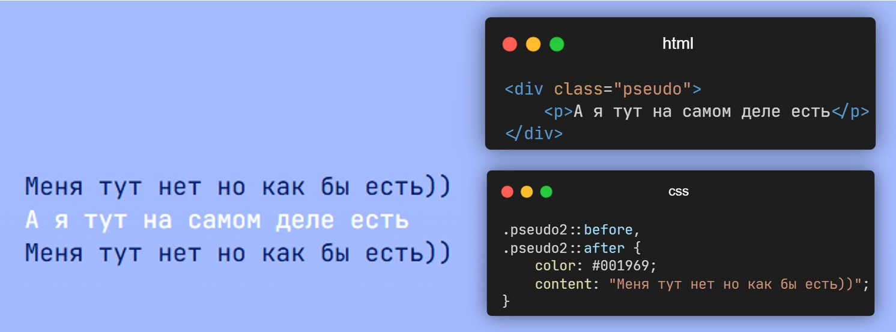
Но сейчас они чаще всего используются для создания различных графических элементов, а также их
стилизации. То бишь тоже самое что и обычный div, но которого не существует в
разметке.
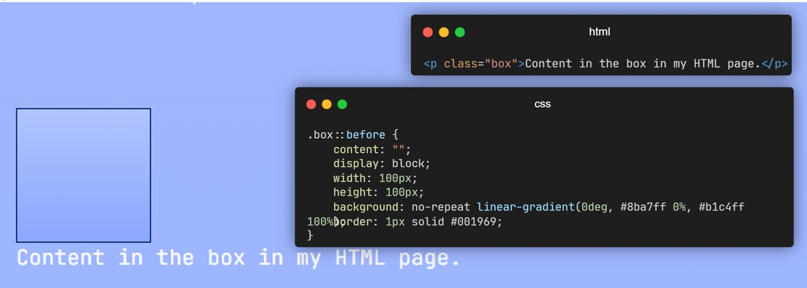
Использование псевдоэлементов ::before и ::after вместе со свойством
content в CSS называется “генерируемым контентом” в CSS, и вы часто будете видеть, как этот
метод используется для различных задач.
Данная особенность, что мы создаем «призрачный» div, позволяет нам выполнять крайне
различные задачи и при этом не захламлять нашу верстку кучей ненужных элементов.
Пример
Давайте для лучшего понимания рассмотрим использование этих псевдоэлементов на примере одного из наших макетов, основной код предоставил Романов Александр:
Мы можем заметить, что на нем помимо текста есть 2 элемента, которые мы бы могли сделать с
помощью обычного div, но тогда у нас в верстке будет 2 бесполезных элемента, чтобы
не загрязнять нашу верстку мы используем псевдоэлементы ::before и
::after, будет это выглядеть следующим образом:
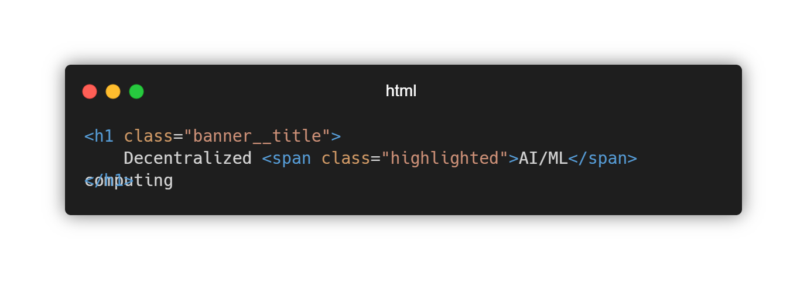
Мы создали следующий элемент: 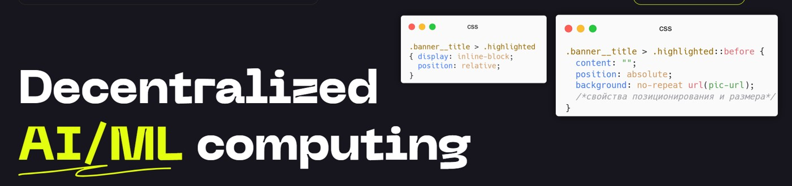
Далее нам надо провернуть тоже самое, но уже со всей надписью и кружком рядом с ней: 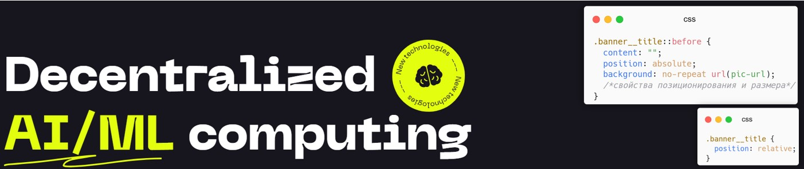
Важно заметить – в обоих случаях я использовал ::before, т.к когда мы используем эти псевдоэлементы для создания инфографики, нет никакой разницы между ::before и ::after, но их всегда 2 на один элемент к которому мы его крепим, так что если мы будем их использовать для стилизации целой секции, нам стоит создать специальные невидимые элементы к которым мы будем их крепить.